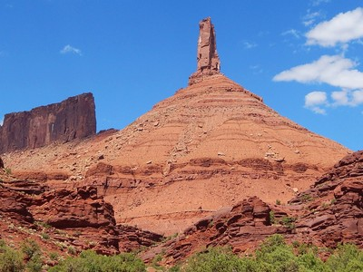
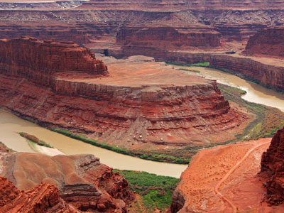
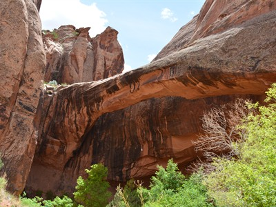
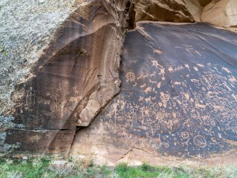
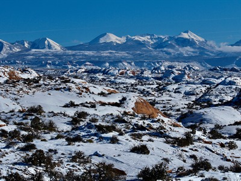
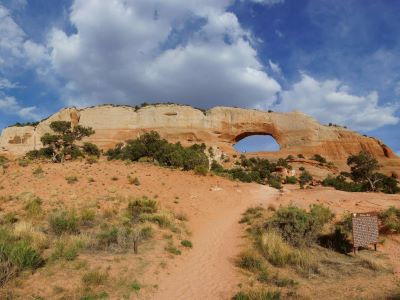
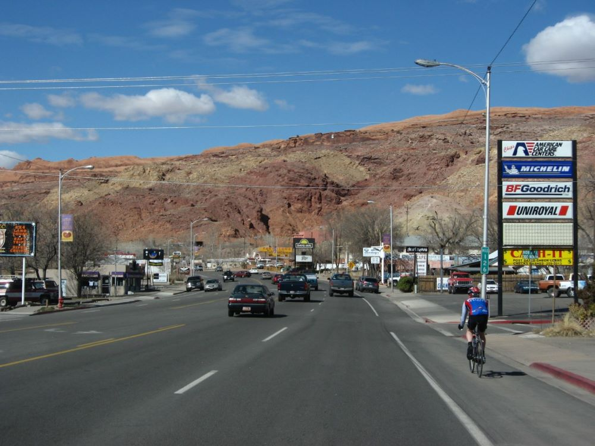
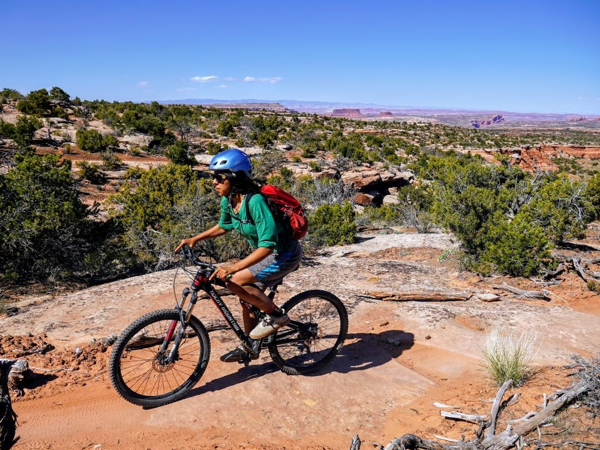
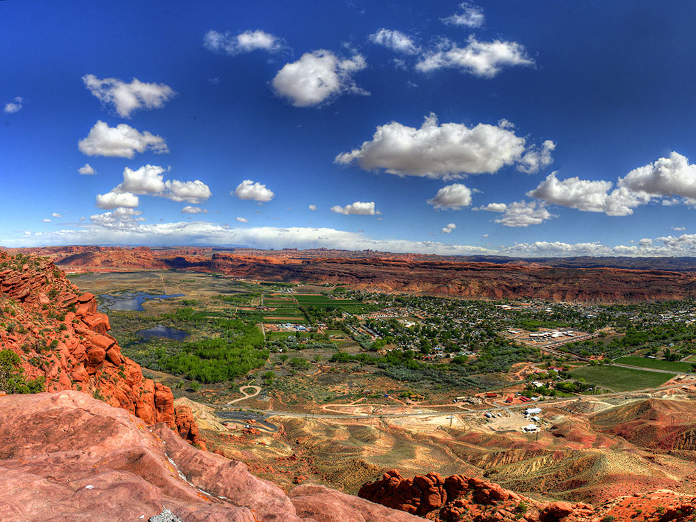

Known for its dramatic scenery, Moab attracts many tourists annually, mostly visitors to the nearby Arches and Canyonlands national parks. The town is a popular base for hikers and mountain bikers who ride the extensive network of trails
Places to See in Moab

Arches National Park
National park known for more than 2,000 natural sandstone arches, including the well-known Delicate Arch, as well as a variety of unique geological resources and formations and contains the highest density of natural arches in the world

Canyonlands National Park
Park preserves a colorful landscape eroded into numerous canyons, mesas, and buttes by the Colorado River, the Green River, and their respective tributaries

Ronald J Scott, CC BY-SA 4.0, via Wikimedia Commons; Image Size Adjusted

Castleton Tower
Iconic sandstone spire rising dramatically from the desert floor, renowned for its world-class climbing routes and panoramic views of surrounding red rock formations.
Corona and Bowtie Arch
Scenic desert trail leading to two striking natural arches, featuring moderate elevation gain, slickrock scrambles, and panoramic views of red rock canyons.

Clément Bardot, CC BY-SA 3.0, via Wikimedia Commons; Image Size Adjusted

Dead Horse Point State Park
Utah state park featuring a dramatic overlook of the Colorado River and Canyonlands National Park. The park covers 5,362 acres (2,170 ha) of high desert at an altitude of 5,900 feet (1,800 m) and has several overlooks, a visitor center, and picnic areas

Jesseg8r, CC BY-SA 4.0, via Wikimedia Commons; Image Size Adjusted

Fisher Towers
Series of towers made of Cutler sandstone capped with Moenkopi sandstone and caked with a stucco of red mud located near Moab, Utah. The Towers are world-renowned as a subject for photography and for its classic rock climbing routes
Difficulty: Moderate
Series of towers made of Cutler sandstone capped with Moenkopi sandstone and caked with a stucco of red mud located near Moab
Hole N' The Rock
Historic 5,000-square-foot home carved into sandstone featuring guided tours, a petting zoo, and eclectic roadside attractions.

BLMUtah, Public domain, via Wikimedia Commons; Image Size Adjusted
.jpg){kind=link}
Morning Glory Arch
Massive sandstone arch tucked in a lush desert alcove, accessible via a scenic canyon trail with stream crossings and towering red rock walls.

RuggyBearLA, CC BY 2.0, via Wikimedia Commons; Image Size Adjusted

Newspaper Rock State Historical Monument
Rock panel etched with hundreds of petroglyphs spanning over 2,000 years, showcasing the cultural expressions of ancient and historic Native American peoples.

Arches National Park, Public domain, via Wikimedia Commons; Image Size Adjusted
Potash Road Dinosaur Tracks and Petroglyphs
Short roadside trail featuring ancient dinosaur tracks and Fremont and Ute petroglyphs etched into sandstone cliffs along the Colorado River.

BLMUtah, Public domain, via Wikimedia Commons; Image Size Adjusted
.jpg){kind=link}
Sand Flats Recreation Area
High desert recreation area featuring slickrock domes, world-famous mountain biking trails, jeep routes, campgrounds, and expansive red rock scenery.

Hans-Günter Spitzer, CC BY 3.0, via Wikimedia Commons; Image Size Adjusted

Wilson Arch
Freestanding sandstone arch with a 91-foot span and 46-foot height, easily accessible from the roadside with a short, steep hike.
Overview
Moab is a small city of about 5,300 people in southeastern Utah, set on the Colorado River in a valley of red sandstone cliffs, and it is one of the best-known outdoor recreation towns in the United States. It is the seat of Grand County and the main gateway to Arches National Park and Canyonlands National Park, which together draw millions of visitors a year. The surrounding desert holds the highest concentration of natural sandstone arches in the world, along with deep canyons, towers, and mesas.
People come to Moab to hike, raft the Colorado River, climb, and ride some of the most famous mountain bike trails in the country, including the Slickrock Trail. It is also a center for four-wheel driving and off-roading, with events such as the annual Moab Jeep Safari, and the area's dramatic scenery has made it a favorite with photographers and a frequent backdrop for films and commercials. The town's many motels, restaurants, outfitters, and gear shops serve a tourism economy that runs nearly year-round.
History
The Moab area was home to the Ancestral Puebloans and Fremont peoples, who left rock art and ruins, and later to the Ute. Spanish traders passed through on the Old Spanish Trail, and Mormon missionaries briefly settled in 1855 at the Elk Mountain Mission before leaving after conflict with the Ute. Permanent settlement began in the late 1870s, and Moab was incorporated in 1902. Ranching and farming sustained the town until the uranium boom of the 1950s, when prospector Charlie Steen's discovery of the Mi Vida mine brought new residents and wealth. After the boom faded, Moab turned to tourism, helped by Western films shot nearby, such as John Ford's Wagon Master in 1949, by magazine coverage, and later by the growth of mountain biking.
Sightseeing and Popular Landmarks
The big attractions are just outside town. Arches National Park, about five miles north, is known for Delicate Arch, Landscape Arch, and the Fiery Furnace, and the Island in the Sky district of Canyonlands National Park, about 30 miles away, has sweeping canyon overlooks. Dead Horse Point State Park looks down on a gooseneck bend of the Colorado River, and the Fisher Towers and Castleton Tower rise along Utah Highway 128 and the Castle Valley. Corona Arch and Bowtie Arch, Morning Glory Arch, Wilson Arch and Hole N" The Rock, a home carved into a sandstone wall south of town, are also popular stops, as is the rock art at Newspaper Rock.
Culture and Museums
The Moab Museum in downtown Moab covers the area's natural history, including dinosaur fossils, along with Native American culture, pioneer settlement, and the uranium era. The Moab Giants dinosaur museum and trackway park north of town displays life-size dinosaur models and preserved tracks. Main Street has art galleries, local shops, and restaurants, and the town hosts events such as the Moab Music Festival, the Moab Arts Festival, and the Skinny Tire Festival road cycling event.
Parks
Moab sits among public lands that include Arches and Canyonlands National Parks, Dead Horse Point State Park, and large areas managed by the Bureau of Land Management. Sand Flats Recreation Area, just east of town, has the Slickrock Trail and the Hell's Revenge four-wheel-drive route, and the Matheson Wetlands Preserve along the Colorado River provides birdwatching close to downtown. The Colorado River and the Green River are used for rafting, kayaking, and canoeing, with Westwater Canyon upstream and Cataract Canyon downstream in Canyonlands.
Seasons and Weather
Moab has a high desert climate at about 4,000 feet in elevation, with hot summers, cold winters, and only about nine inches of rain a year. Summer highs often reach the upper 90s and above 100°F, and winter highs are in the 40s°F with nights that drop below freezing and an occasional light snow. Spring and fall are the most pleasant and busiest seasons, with mild days that suit hiking and biking, while summer visitors usually plan activities for early morning or near the river. Late summer can bring brief monsoon thunderstorms and flash floods in the canyons.
This article uses material from Wikipedia as well as information from official tourism and institutional sources. Key references include Discover Moab, Arches National Park, Canyonlands National Park, Moab Museum, Utah State Parks, and National Weather Service Grand Junction. Wikipedia material is from the article "Moab, Utah", which is released under the Creative Commons Attribution-Share-Alike License 3.0.

.jpg){kind=link}


